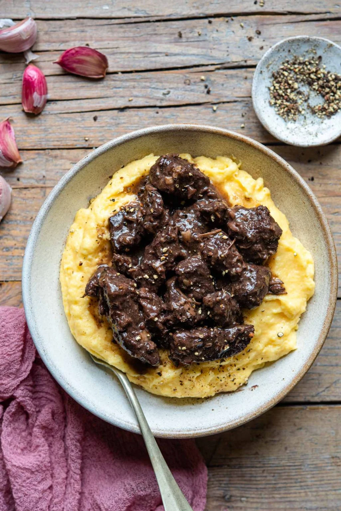

Peposo

Description
Peposo is a traditional Tuscan Beef Stew originating from Florence. It truly is the simplest stew you'll ever make yet it has so much flavour. Made with garlic, lots of black pepper and a whole bottle of red wine, super delicious and perfect served with creamy polenta.
Ingredients
- 2 lbs beef chuck or shank or stewing beef (1 kg) cut into 1 inch cubes
- 1 bottle red wine Chianti or Sangiovese if possible
- 6 whole garlic cloves peeled
- 1 tablespoon freshly ground black pepper
- 1 teaspoon sea salt flakes or kosher salt
- 11 tablespoon olive oil
Instructions
- Heat the olive oil in a large pot, brown the beef on all sides for a minute or two (you might need to do this in batches so there is enough room).
- Add the beef and juices back to the pot (if browning in batches) and add the red wine, garlic, salt and pepper.
- Cover the pot with a lid and simmer on a medium-low heat for 1.5 hours, uncover the pot and continue to simmer the stew for another 1.5 hours until the liquid has reduced slightly.
- STop tip: once the stew is uncovered check it every so often and give it a stir to make sure it doesn't stick or the meat at the top dries out.
- The beef should be tender but not completely falling apart. Serve with creamy polenta and crusty bread.